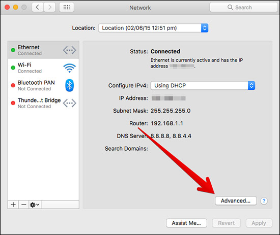
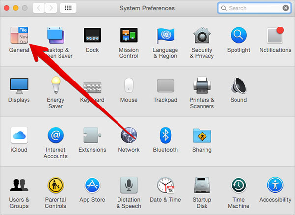
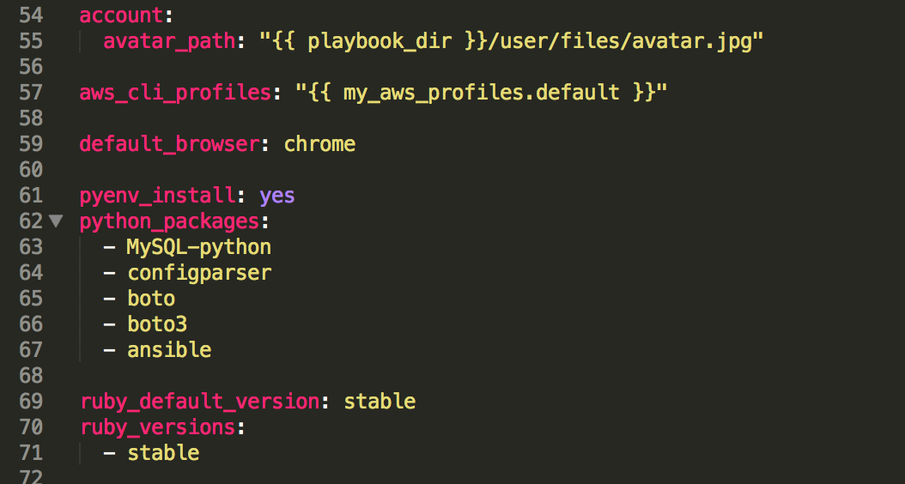
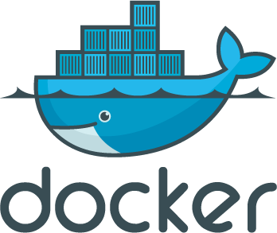
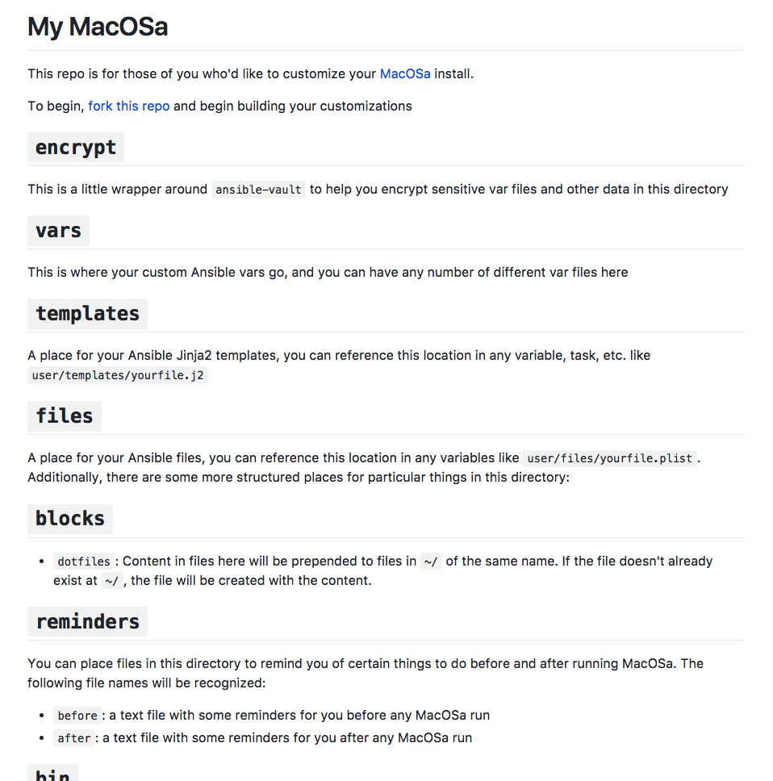
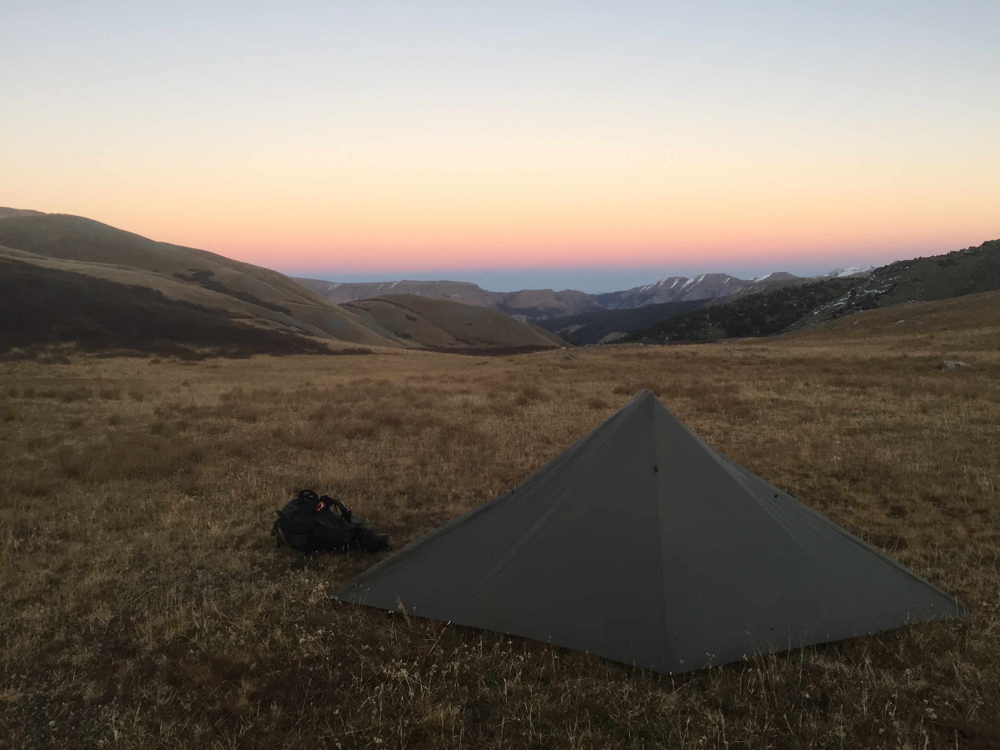

So much to install manually


So many things to configure
Get up and running quickly with a new macOS install the way you want it. And keep it that way.
</>
Made first for developers and other IT staff
$ macosa
$ macosa -u -l --tags=system




Installing macOSa
bash <(curl https://raw.githubusercontent.com/rockholla/macosa/master/install) -r
% Total % Received % Xferd Average Speed Time Time Time Current
Dload Upload Total Spent Left Speed
100 5809 100 5809 0 0 7112 0 --:--:-- --:--:-- --:--:-- 7110
% Total % Received % Xferd Average Speed Time Time Time Current
Dload Upload Total Spent Left Speed
100 558 100 558 0 0 2242 0 --:--:-- --:--:-- --:--:-- 2250
Downloading macOSa source files...
% Total % Received % Xferd Average Speed Time Time Time Current
Dload Upload Total Spent Left Speed
100 128 0 128 0 0 274 0 --:--:-- --:--:-- --:--:-- 274
100 35860 0 35860 0 0 35262 0 --:--:-- 0:00:01 --:--:-- 35262
What is the root password for this Mac? (will also be used as the macOSa vault password)
Re-enter the password:
Installing macOSa to your machine...
What do you want to name this Mac? vinnygoombots
Running system software update...
A restart will be required after the update is complete.
Software Update Tool
Copyright 2002-2015 Apple Inc.
Finding available software
Downloading iTunes
Downloading macOS Sierra Update
Downloaded iTunes
Downloaded macOS Sierra Update
Installing iTunes, macOS Sierra Update
[Restored Aug 24, 2017, 5:48:57 AM]
Last login: Thu Aug 24 05:48:34 on console
Restored session: Wed Aug 23 23:12:09 PDT 2017
Vinnys-MacBook-Pro:~ vinnygoombots$ /Users/vinnygoombots/Downloads/macosa/install -r
Running system software update...
Software Update Tool
Finding available software
Downloaded Remote Desktop Client Update
Installing Remote Desktop Client Update
Done with Remote Desktop Client Update
Done.
Refreshing sudo rights
Installing Homebrew...
==> This script will install:
/usr/local/bin/brew
/usr/local/share/doc/homebrew
/usr/local/share/man/man1/brew.1
/usr/local/share/zsh/site-functions/_brew
/usr/local/etc/bash_completion.d/brew
/usr/local/Homebrew
==> The following new directories will be created:
/usr/local/Cellar
/usr/local/Homebrew
/usr/local/Frameworks
/usr/local/bin
/usr/local/etc
/usr/local/include
/usr/local/lib
/usr/local/opt
/usr/local/sbin
/usr/local/share
/usr/local/share/zsh
/usr/local/share/zsh/site-functions
/usr/local/var
==> /usr/bin/sudo /bin/mkdir -p /usr/local/Cellar /usr/local/Homebrew /usr/local/Frameworks /usr/local/bin /usr/local/etc /usr/local/include /usr/local/lib /usr/local/opt /usr/local/sbin /usr/local/share /usr/local/share/zsh /usr/local/share/zsh/site-functions /usr/local/var
==> /usr/bin/sudo /bin/chmod g+rwx /usr/local/Cellar /usr/local/Homebrew /usr/local/Frameworks /usr/local/bin /usr/local/etc /usr/local/include /usr/local/lib /usr/local/opt /usr/local/sbin /usr/local/share /usr/local/share/zsh /usr/local/share/zsh/site-functions /usr/local/var
==> /usr/bin/sudo /bin/chmod 755 /usr/local/share/zsh /usr/local/share/zsh/site-functions
==> /usr/bin/sudo /usr/sbin/chown vinnygoombots /usr/local/Cellar /usr/local/Homebrew /usr/local/Frameworks /usr/local/bin /usr/local/etc /usr/local/include /usr/local/lib /usr/local/opt /usr/local/sbin /usr/local/share /usr/local/share/zsh /usr/local/share/zsh/site-functions /usr/local/var
==> /usr/bin/sudo /usr/bin/chgrp admin /usr/local/Cellar /usr/local/Homebrew /usr/local/Frameworks /usr/local/bin /usr/local/etc /usr/local/include /usr/local/lib /usr/local/opt /usr/local/sbin /usr/local/share /usr/local/share/zsh /usr/local/share/zsh/site-functions /usr/local/var
==> /usr/bin/sudo /bin/mkdir -p /Users/vinnygoombots/Library/Caches/Homebrew
==> /usr/bin/sudo /bin/chmod g+rwx /Users/vinnygoombots/Library/Caches/Homebrew
==> /usr/bin/sudo /usr/sbin/chown vinnygoombots /Users/vinnygoombots/Library/Caches/Homebrew
==> /usr/bin/sudo /bin/mkdir -p /Library/Caches/Homebrew
==> /usr/bin/sudo /bin/chmod g+rwx /Library/Caches/Homebrew
==> /usr/bin/sudo /usr/sbin/chown vinnygoombots /Library/Caches/Homebrew
==> Downloading and installing Homebrew...
remote: Counting objects: 6985, done.
remote: Compressing objects: 100% (4153/4153), done.
remote: Total 6985 (delta 4180), reused 4597 (delta 2616), pack-reused 0
Receiving objects: 100% (6985/6985), 3.68 MiB | 2.33 MiB/s, done.
Resolving deltas: 100% (4180/4180), done.
From https://github.com/Homebrew/brew
* [new branch] master -> origin/master
* [new tag] 0.1 -> 0.1
* [new tag] 0.2 -> 0.2
* [new tag] 0.3 -> 0.3
* [new tag] 0.4 -> 0.4
* [new tag] 0.5 -> 0.5
* [new tag] 0.6 -> 0.6
* [new tag] 0.7 -> 0.7
* [new tag] 0.7.1 -> 0.7.1
* [new tag] 0.8 -> 0.8
* [new tag] 0.8.1 -> 0.8.1
* [new tag] 0.9 -> 0.9
* [new tag] 0.9.1 -> 0.9.1
* [new tag] 0.9.2 -> 0.9.2
* [new tag] 0.9.3 -> 0.9.3
* [new tag] 0.9.4 -> 0.9.4
* [new tag] 0.9.5 -> 0.9.5
* [new tag] 0.9.8 -> 0.9.8
* [new tag] 0.9.9 -> 0.9.9
* [new tag] 1.0.0 -> 1.0.0
* [new tag] 1.0.1 -> 1.0.1
* [new tag] 1.0.2 -> 1.0.2
* [new tag] 1.0.3 -> 1.0.3
* [new tag] 1.0.4 -> 1.0.4
* [new tag] 1.0.5 -> 1.0.5
* [new tag] 1.0.6 -> 1.0.6
* [new tag] 1.0.7 -> 1.0.7
* [new tag] 1.0.8 -> 1.0.8
* [new tag] 1.0.9 -> 1.0.9
* [new tag] 1.1.0 -> 1.1.0
* [new tag] 1.1.1 -> 1.1.1
* [new tag] 1.1.10 -> 1.1.10
* [new tag] 1.1.11 -> 1.1.11
* [new tag] 1.1.12 -> 1.1.12
* [new tag] 1.1.13 -> 1.1.13
* [new tag] 1.1.2 -> 1.1.2
* [new tag] 1.1.3 -> 1.1.3
* [new tag] 1.1.4 -> 1.1.4
* [new tag] 1.1.5 -> 1.1.5
* [new tag] 1.1.6 -> 1.1.6
* [new tag] 1.1.7 -> 1.1.7
* [new tag] 1.1.8 -> 1.1.8
* [new tag] 1.1.9 -> 1.1.9
* [new tag] 1.2.0 -> 1.2.0
* [new tag] 1.2.1 -> 1.2.1
* [new tag] 1.2.2 -> 1.2.2
* [new tag] 1.2.3 -> 1.2.3
* [new tag] 1.2.4 -> 1.2.4
* [new tag] 1.2.5 -> 1.2.5
* [new tag] 1.2.6 -> 1.2.6
* [new tag] 1.3.0 -> 1.3.0
* [new tag] 1.3.1 -> 1.3.1
HEAD is now at 6d393de Merge pull request #3085 from Homebrew/issue-template-firmer
==> Tapping homebrew/core
Cloning into '/usr/local/Homebrew/Library/Taps/homebrew/homebrew-core'...
remote: Counting objects: 4550, done.
remote: Compressing objects: 100% (4340/4340), done.
remote: Total 4550 (delta 35), reused 463 (delta 11), pack-reused 0
Receiving objects: 100% (4550/4550), 3.62 MiB | 2.32 MiB/s, done.
Resolving deltas: 100% (35/35), done.
Checking out files: 100% (4571/4571), done.
Tapped 4336 formulae (4,595 files, 11.3MB)
==> Cleaning up /Library/Caches/Homebrew...
==> Migrating /Library/Caches/Homebrew to /Users/vinnygoombots/Library/Caches/Ho
==> Deleting /Library/Caches/Homebrew...
Already up-to-date.
==> Installation successful!
==> Homebrew has enabled anonymous aggregate user behaviour analytics.
Read the analytics documentation (and how to opt-out) here:
https://docs.brew.sh/Analytics.html
==> Next steps:
- Run `brew help` to get started
- Further documentation:
https://docs.brew.sh
Installing wget...
==> Installing dependencies for wget: openssl@1.1
==> Installing wget dependency: openssl@1.1
==> Downloading https://homebrew.bintray.com/bottles/openssl@1.1-1.1.0f.sierra.bottle.tar.gz
######################################################################## 100.0%
==> Pouring openssl@1.1-1.1.0f.sierra.bottle.tar.gz
==> Caveats
A CA file has been bootstrapped using certificates from the system
keychain. To add additional certificates, place .pem files in
/usr/local/etc/openssl@1.1/certs
and run
/usr/local/opt/openssl@1.1/bin/c_rehash
This formula is keg-only, which means it was not symlinked into /usr/local,
because this is an alternate version of another formula.
If you need to have this software first in your PATH run:
echo 'export PATH="/usr/local/opt/openssl@1.1/bin:$PATH"' >> ~/.bash_profile
For compilers to find this software you may need to set:
LDFLAGS: -L/usr/local/opt/openssl@1.1/lib
CPPFLAGS: -I/usr/local/opt/openssl@1.1/include
==> Summary
🍺 /usr/local/Cellar/openssl@1.1/1.1.0f: 6,421 files, 15.5MB
==> Installing wget
==> Downloading https://homebrew.bintray.com/bottles/wget-1.19.1_1.sierra.bottle.tar.gz
######################################################################## 100.0%
==> Pouring wget-1.19.1_1.sierra.bottle.tar.gz
🍺 /usr/local/Cellar/wget/1.19.1_1: 11 files, 1.6MB
Downloading https://github.com/rvm/rvm/archive/master.tar.gz
Installing RVM to /Users/vinnygoombots/.rvm/
Adding rvm PATH line to /Users/vinnygoombots/.profile /Users/vinnygoombots/.mkshrc /Users/vinnygoombots/.bashrc /Users/vinnygoombots/.zshrc.
Adding rvm loading line to /Users/vinnygoombots/.profile /Users/vinnygoombots/.bash_profile /Users/vinnygoombots/.zlogin.
Installation of RVM in /Users/vinnygoombots/.rvm/ is almost complete:
* To start using RVM you need to run `source /Users/vinnygoombots/.rvm/scripts/rvm`
in all your open shell windows, in rare cases you need to reopen all shell windows.
Refreshing sudo rights
Searching for binary rubies, this might take some time.
No binary rubies available for: osx/10.12/x86_64/ruby-2.4.1.
Continuing with compilation. Please read 'rvm help mount' to get more information on binary rubies.
Checking requirements for osx.
Installing requirements for osx.
Updating system......
Installing required packages: autoconf, automake, libtool, pkg-config, coreutils, libyaml, readline, libksba.......
Certificates bundle '/usr/local/etc/openssl@1.1/cert.pem' is already up to date.
Requirements installation successful.
Installing Ruby from source to: /Users/vinnygoombots/.rvm/rubies/ruby-2.4.1, this may take a while depending on your cpu(s)...
ruby-2.4.1 - #downloading ruby-2.4.1, this may take a while depending on your connection...
% Total % Received % Xferd Average Speed Time Time Time Current
Dload Upload Total Spent Left Speed
100 11.9M 100 11.9M 0 0 2967k 0 0:00:04 0:00:04 --:--:-- 2968k
ruby-2.4.1 - #extracting ruby-2.4.1 to /Users/vinnygoombots/.rvm/src/ruby-2.4.1....
ruby-2.4.1 - #applying patch /Users/vinnygoombots/.rvm/patches/ruby/2.4.1/random_c_using_NR_prefix.patch.
ruby-2.4.1 - #configuring..................................................................
ruby-2.4.1 - #post-configuration.
ruby-2.4.1 - #compiling......./
[Restored Aug 24, 2017, 6:10:44 AM]
Last login: Thu Aug 24 06:10:41 on console
Restored session: Thu Aug 24 06:00:25 PDT 2017
/Users/vinnygoombots/Downloads/macosa/install -r
Vinnys-MacBook-Pro:~ vinnygoombots$ /Users/vinnygoombots/Downloads/macosa/install -r
Running system software update...
No updates available
Refreshing sudo rights
Homebrew is installed.
wget is installed.
Xcode tools are already installed
We need to initialize the 'My macOSa' part of your install. Please see https://github.com/rockholla/mymacosa for more info.
If you have one, please enter the git ssh repo URI where your macOSa customizations live (if blank, we'll just create a base repo locally for you from https://github.com/rockholla/mymacosa):
% Total % Received % Xferd Average Speed Time Time Time Current
Dload Upload Total Spent Left Speed
100 130 0 130 0 0 332 0 --:--:-- --:--:-- --:--:-- 332
100 4558 0 4558 0 0 5953 0 --:--:-- --:--:-- --:--:-- 5953
Archive: master.zip
b5aaa4bd8b6aededcb527d6ad4fbdebb356d9c43
creating: rockholla-mymacosa-b5aaa4b/
inflating: rockholla-mymacosa-b5aaa4b/README.md
creating: rockholla-mymacosa-b5aaa4b/bin/
extracting: rockholla-mymacosa-b5aaa4b/bin/.keep
creating: rockholla-mymacosa-b5aaa4b/blocks/
creating: rockholla-mymacosa-b5aaa4b/blocks/dotfiles/
extracting: rockholla-mymacosa-b5aaa4b/blocks/dotfiles/.keep
inflating: rockholla-mymacosa-b5aaa4b/encrypt
creating: rockholla-mymacosa-b5aaa4b/files/
extracting: rockholla-mymacosa-b5aaa4b/files/.keep
creating: rockholla-mymacosa-b5aaa4b/reminders/
extracting: rockholla-mymacosa-b5aaa4b/reminders/.keep
creating: rockholla-mymacosa-b5aaa4b/tasks/
creating: rockholla-mymacosa-b5aaa4b/tasks/post/
extracting: rockholla-mymacosa-b5aaa4b/tasks/post/.keep
creating: rockholla-mymacosa-b5aaa4b/tasks/pre/
extracting: rockholla-mymacosa-b5aaa4b/tasks/pre/.keep
creating: rockholla-mymacosa-b5aaa4b/templates/
extracting: rockholla-mymacosa-b5aaa4b/templates/.keep
creating: rockholla-mymacosa-b5aaa4b/vars/
extracting: rockholla-mymacosa-b5aaa4b/vars/.keep
Running local machine provisioning...
Initializing sudo
Refreshing sudo rights
Homebrew is installed.
wget is installed.
Installing Python via Homebrew...
Updating Homebrew...
==> Auto-updated Homebrew!
Updated 1 tap (homebrew/core).
No changes to formulae.
==> Installing dependencies for python: sqlite, gdbm, openssl
==> Installing python dependency: sqlite
==> Downloading https://homebrew.bintray.com/bottles/sqlite-3.20.0.sierra.bottle.tar.gz
######################################################################## 100.0%
==> Pouring sqlite-3.20.0.sierra.bottle.tar.gz
==> Caveats
This formula is keg-only, which means it was not symlinked into /usr/local,
because macOS provides an older sqlite3.
If you need to have this software first in your PATH run:
echo 'export PATH="/usr/local/opt/sqlite/bin:$PATH"' >> ~/.bash_profile
For compilers to find this software you may need to set:
LDFLAGS: -L/usr/local/opt/sqlite/lib
CPPFLAGS: -I/usr/local/opt/sqlite/include
For pkg-config to find this software you may need to set:
PKG_CONFIG_PATH: /usr/local/opt/sqlite/lib/pkgconfig
==> Summary
🍺 /usr/local/Cellar/sqlite/3.20.0: 11 files, 3.0MB
==> Installing python dependency: gdbm
==> Downloading https://homebrew.bintray.com/bottles/gdbm-1.13.sierra.bottle.tar.gz
######################################################################## 100.0%
==> Pouring gdbm-1.13.sierra.bottle.tar.gz
🍺 /usr/local/Cellar/gdbm/1.13: 19 files, 554.4KB
==> Installing python dependency: openssl
==> Downloading https://homebrew.bintray.com/bottles/openssl-1.0.2l.sierra.bottle.tar.gz
######################################################################## 100.0%
==> Pouring openssl-1.0.2l.sierra.bottle.tar.gz
==> Caveats
A CA file has been bootstrapped using certificates from the SystemRoots
keychain. To add additional certificates (e.g. the certificates added in
the System keychain), place .pem files in
/usr/local/etc/openssl/certs
and run
/usr/local/opt/openssl/bin/c_rehash
This formula is keg-only, which means it was not symlinked into /usr/local,
because Apple has deprecated use of OpenSSL in favor of its own TLS and crypto libraries.
If you need to have this software first in your PATH run:
echo 'export PATH="/usr/local/opt/openssl/bin:$PATH"' >> ~/.bash_profile
For compilers to find this software you may need to set:
LDFLAGS: -L/usr/local/opt/openssl/lib
CPPFLAGS: -I/usr/local/opt/openssl/include
For pkg-config to find this software you may need to set:
PKG_CONFIG_PATH: /usr/local/opt/openssl/lib/pkgconfig
==> Summary
🍺 /usr/local/Cellar/openssl/1.0.2l: 1,709 files, 12.2MB
==> Installing python
==> Downloading https://homebrew.bintray.com/bottles/python-2.7.13_1.sierra.bottle.tar.gz
######################################################################## 100.0%
==> Pouring python-2.7.13_1.sierra.bottle.tar.gz
==> /usr/local/Cellar/python/2.7.13_1/bin/python2 -s setup.py --no-user-cfg install --force --verbose --single-version-externally-managed --record=installed.txt --in
==> /usr/local/Cellar/python/2.7.13_1/bin/python2 -s setup.py --no-user-cfg install --force --verbose --single-version-externally-managed --record=installed.txt --in
==> /usr/local/Cellar/python/2.7.13_1/bin/python2 -s setup.py --no-user-cfg install --force --verbose --single-version-externally-managed --record=installed.txt --in
==> Caveats
This formula installs a python2 executable to /usr/local/bin.
If you wish to have this formula's python executable in your PATH then add
the following to ~/.bash_profile:
export PATH="/usr/local/opt/python/libexec/bin:$PATH"
Pip and setuptools have been installed. To update them
pip2 install --upgrade pip setuptools
You can install Python packages with
pip2 install <package>
They will install into the site-package directory
/usr/local/lib/python2.7/site-packages
See: https://docs.brew.sh/Homebrew-and-Python.html
==> Summary
🍺 /usr/local/Cellar/python/2.7.13_1: 3,528 files, 48MB
Installing biplist...
Collecting biplist
Downloading biplist-1.0.2.tar.gz
Building wheels for collected packages: biplist
Running setup.py bdist_wheel for biplist ... done
Stored in directory: /Users/vinnygoombots/Library/Caches/pip/wheels/1e/da/99/8a918e8b62653a9e42384ee9ad528ab80454b475b914807332
Successfully built biplist
Installing collected packages: biplist
Successfully installed biplist-1.0.2
Installing Ansible...
Collecting ansible
Downloading ansible-2.3.2.0.tar.gz (4.3MB)
100% |████████████████████████████████| 4.3MB 217kB/s
Collecting jinja2 (from ansible)
Downloading Jinja2-2.9.6-py2.py3-none-any.whl (340kB)
100% |████████████████████████████████| 348kB 2.3MB/s
Collecting PyYAML (from ansible)
Downloading PyYAML-3.12.tar.gz (253kB)
100% |████████████████████████████████| 256kB 2.0MB/s
Collecting paramiko (from ansible)
Downloading paramiko-2.2.1-py2.py3-none-any.whl (176kB)
100% |████████████████████████████████| 184kB 2.4MB/s
Collecting pycrypto>=2.6 (from ansible)
Downloading pycrypto-2.6.1.tar.gz (446kB)
100% |████████████████████████████████| 450kB 1.1MB/s
Requirement already satisfied: setuptools in /usr/local/lib/python2.7/site-packages (from ansible)
Collecting MarkupSafe>=0.23 (from jinja2->ansible)
Downloading MarkupSafe-1.0.tar.gz
Collecting bcrypt>=3.1.3 (from paramiko->ansible)
Downloading bcrypt-3.1.3-cp27-cp27m-macosx_10_6_intel.whl (51kB)
100% |████████████████████████████████| 61kB 5.0MB/s
Collecting cryptography>=1.1 (from paramiko->ansible)
Downloading cryptography-2.0.3-cp27-cp27m-macosx_10_6_intel.whl (1.5MB)
100% |████████████████████████████████| 1.5MB 695kB/s
Collecting pynacl>=1.0.1 (from paramiko->ansible)
Downloading PyNaCl-1.1.2-cp27-cp27m-macosx_10_6_intel.whl (178kB)
100% |████████████████████████████████| 184kB 2.2MB/s
Collecting pyasn1>=0.1.7 (from paramiko->ansible)
Downloading pyasn1-0.3.2-py2.py3-none-any.whl (63kB)
100% |████████████████████████████████| 71kB 2.9MB/s
Collecting six>=1.4.1 (from bcrypt>=3.1.3->paramiko->ansible)
Downloading six-1.10.0-py2.py3-none-any.whl
Collecting cffi>=1.1 (from bcrypt>=3.1.3->paramiko->ansible)
Downloading cffi-1.10.0-cp27-cp27m-macosx_10_6_intel.whl (226kB)
100% |████████████████████████████████| 235kB 2.3MB/s
Collecting idna>=2.1 (from cryptography>=1.1->paramiko->ansible)
Downloading idna-2.6-py2.py3-none-any.whl (56kB)
100% |████████████████████████████████| 61kB 2.9MB/s
Collecting enum34 (from cryptography>=1.1->paramiko->ansible)
Downloading enum34-1.1.6-py2-none-any.whl
Collecting ipaddress (from cryptography>=1.1->paramiko->ansible)
Downloading ipaddress-1.0.18-py2-none-any.whl
Collecting asn1crypto>=0.21.0 (from cryptography>=1.1->paramiko->ansible)
Downloading asn1crypto-0.22.0-py2.py3-none-any.whl (97kB)
100% |████████████████████████████████| 102kB 3.3MB/s
Collecting pycparser (from cffi>=1.1->bcrypt>=3.1.3->paramiko->ansible)
Downloading pycparser-2.18.tar.gz (245kB)
100% |████████████████████████████████| 256kB 2.3MB/s
Building wheels for collected packages: ansible, PyYAML, pycrypto, MarkupSafe, pycparser
Running setup.py bdist_wheel for ansible ... done
Stored in directory: /Users/vinnygoombots/Library/Caches/pip/wheels/7e/6c/a3/bc77398c75ba7cdb8bab258af9fe555c26f13d67ab90f9a46a
Running setup.py bdist_wheel for PyYAML ... done
Stored in directory: /Users/vinnygoombots/Library/Caches/pip/wheels/2c/f7/79/13f3a12cd723892437c0cfbde1230ab4d82947ff7b3839a4fc
Running setup.py bdist_wheel for pycrypto ... done
Stored in directory: /Users/vinnygoombots/Library/Caches/pip/wheels/80/1f/94/f76e9746864f198eb0e304aeec319159fa41b082f61281ffce
Running setup.py bdist_wheel for MarkupSafe ... done
Stored in directory: /Users/vinnygoombots/Library/Caches/pip/wheels/88/a7/30/e39a54a87bcbe25308fa3ca64e8ddc75d9b3e5afa21ee32d57
Running setup.py bdist_wheel for pycparser ... done
Stored in directory: /Users/vinnygoombots/Library/Caches/pip/wheels/95/14/9a/5e7b9024459d2a6600aaa64e0ba485325aff7a9ac7489db1b6
Successfully built ansible PyYAML pycrypto MarkupSafe pycparser
Installing collected packages: MarkupSafe, jinja2, PyYAML, six, pycparser, cffi, bcrypt, idna, enum34, ipaddress, asn1crypto, cryptography, pynacl, pyasn1, paramiko, pycrypto, ansible
Successfully installed MarkupSafe-1.0 PyYAML-3.12 ansible-2.3.2.0 asn1crypto-0.22.0 bcrypt-3.1.3 cffi-1.10.0 cryptography-2.0.3 enum34-1.1.6 idna-2.6 ipaddress-1.0.18 jinja2-2.9.6 paramiko-2.2.1 pyasn1-0.3.2 pycparser-2.18 pycrypto-2.6.1 pynacl-1.1.2 six-1.10.0
Running main playbook against local connection...
PLAY [macos] ********************************************************************************************************************************************************
TASK [Gathering Facts] **********************************************************************************************************************************************
ok: [localhost]
TASK [Include default variables] ************************************************************************************************************************************
ok: [localhost]
TASK [Include user-supplied variables] ******************************************************************************************************************************
ok: [localhost]
TASK [Get a list of all user-supplied pre tasks to include] *********************************************************************************************************
ok: [localhost]
TASK [Include user-supplied pre tasks] ******************************************************************************************************************************
TASK [homebrew : Ensure configured taps are tapped.] ****************************************************************************************************************
TASK [homebrew : Update homebrew (if configured)] *******************************************************************************************************************
changed: [localhost]
TASK [homebrew : Ensure configured homebrew packages are installed.] ************************************************************************************************
TASK [homebrew : Upgrade all homebrew packages (if configured).] ****************************************************************************************************
skipping: [localhost]
TASK [homebrew : Get list of apps installed with cask.] *************************************************************************************************************
ok: [localhost]
TASK [homebrew : Install configured cask applications.] *************************************************************************************************************
TASK [python : Install pyenv] ***************************************************************************************************************************************
skipping: [localhost]
TASK [python : Ensure pyenv .bash_profile line is present] **********************************************************************************************************
skipping: [localhost]
TASK [python : Ensure pyenv .bash_profile line is not present] ******************************************************************************************************
ok: [localhost]
TASK [python : Install Python Packages] *****************************************************************************************************************************
TASK [node : Check to see if nvm is installed] **********************************************************************************************************************
ok: [localhost]
TASK [node : Ensure nvm initialization line is present in .bash_profile] ********************************************************************************************
changed: [localhost]
TASK [node : Install nvm] *******************************************************************************************************************************************
skipping: [localhost]
TASK [node : Make sure at least the most recent stable version of node is installed using nvm] **********************************************************************
skipping: [localhost]
TASK [node : Get the stable version] ********************************************************************************************************************************
skipping: [localhost]
TASK [node : set_fact] **********************************************************************************************************************************************
skipping: [localhost]
TASK [node : Compare installed versions of node against ones we want installed] *************************************************************************************
skipping: [localhost] => (item=stable)
TASK [node : Install node versions] *********************************************************************************************************************************
skipping: [localhost] => (item={'skipped': True, '_ansible_no_log': False, 'skip_reason': u'Conditional result was False', '_ansible_item_result': True, 'item': u'stable', 'changed': False})
TASK [node : Get current node version being used] *******************************************************************************************************************
skipping: [localhost]
TASK [node : Set default node version] ******************************************************************************************************************************
skipping: [localhost]
TASK [node : Ensure configured npm packages are installed globally] *************************************************************************************************
TASK [ruby : Check to see if rvm is installed] **********************************************************************************************************************
ok: [localhost]
TASK [ruby : Install rvm] *******************************************************************************************************************************************
skipping: [localhost]
TASK [ruby : Ensure rvm initialization lines are present in .bash_profile] ******************************************************************************************
ok: [localhost] => (item=[[ -s "$HOME/.rvm/scripts/rvm" ]] && source "$HOME/.rvm/scripts/rvm" # Load RVM into a shell session *as a function*)
changed: [localhost] => (item=export PATH="$PATH:$HOME/.rvm/bin")
TASK [ruby : Re-source bash_profile] ********************************************************************************************************************************
changed: [localhost]
TASK [ruby : Get list of standard known rubies] *********************************************************************************************************************
ok: [localhost]
TASK [ruby : Get list of installed rubies] **************************************************************************************************************************
ok: [localhost]
TASK [ruby : Get current default ruby version] **********************************************************************************************************************
ok: [localhost]
TASK [ruby : set_fact] **********************************************************************************************************************************************
ok: [localhost]
TASK [ruby : Install ruby versions] *********************************************************************************************************************************
skipping: [localhost] => (item=stable)
TASK [ruby : set_fact] **********************************************************************************************************************************************
ok: [localhost]
TASK [ruby : Set default ruby] **************************************************************************************************************************************
skipping: [localhost]
TASK [browsers : Get current default browser] ***********************************************************************************************************************
ok: [localhost]
TASK [browsers : Set default browser] *******************************************************************************************************************************
skipping: [localhost]
TASK [aws : Ensure aws cli is installed] ****************************************************************************************************************************
changed: [localhost]
TASK [aws : Ensure ~/.aws directory exists] *************************************************************************************************************************
changed: [localhost]
TASK [aws : Set aws cli config] *************************************************************************************************************************************
TASK [aws : Set aws cli credentials] ********************************************************************************************************************************
TASK [aws : Remove aws cli config if set to inactive] ***************************************************************************************************************
TASK [aws : Remove aws cli credentials if set to inactive] **********************************************************************************************************
TASK [user : Make sure .bash_profile is setup] **********************************************************************************************************************
changed: [localhost] => (item=[[ -s ~/.profile ]] && source ~/.profile)
changed: [localhost] => (item=[[ -s ~/.bash_aliases ]] && source ~/.bash_aliases)
changed: [localhost] => (item=export PATH=/usr/local/bin:/usr/local/sbin:~/.macosa/bin:~/.macosa/user/bin:$PATH)
TASK [user : Copy dotfile blocks to ~/] *****************************************************************************************************************************
skipping: [localhost] => (item=/Users/vinnygoombots/.macosa/user/blocks/dotfiles/.keep)
TASK [user : Get current account avatar] ****************************************************************************************************************************
skipping: [localhost]
TASK [user : Set account avatar] ************************************************************************************************************************************
skipping: [localhost]
TASK [user : Ensure .ssh directory exists.] *************************************************************************************************************************
changed: [localhost]
TASK [user : Write ssh config] **************************************************************************************************************************************
changed: [localhost]
TASK [user : Write ssh private key files] ***************************************************************************************************************************
TASK [user : Write ssh public key files] ****************************************************************************************************************************
TASK [system : Check the computer name] *****************************************************************************************************************************
ok: [localhost]
TASK [system : Set the computer name] *******************************************************************************************************************************
changed: [localhost]
TASK [system : Check current power management settings] *************************************************************************************************************
ok: [localhost] => (item={'key': u'disksleep', 'value': 120})
ok: [localhost] => (item={'key': u'sleep', 'value': 60})
ok: [localhost] => (item={'key': u'displaysleep', 'value': 20})
TASK [system : Configure power management settings] *****************************************************************************************************************
changed: [localhost] => (item={'_ansible_parsed': True, 'stderr_lines': [], u'changed': False, u'end': u'2017-08-24 06:13:42.580582', '_ansible_no_log': False, u'stdout': u'10', '_ansible_item_result': True, u'rc': 0, u'start': u'2017-08-24 06:13:42.553435', u'cmd': u'pmset -a -g | grep -E "^(\\s)disksleep(\\s+)([0-9]+)(.*?)$" | grep -oE "[0-9]+"', 'item': {'value': 120, 'key': u'disksleep'}, u'delta': u'0:00:00.027147', u'invocation': {u'module_args': {u'creates': None, u'executable': None, u'_uses_shell': True, u'_raw_params': u'pmset -a -g | grep -E "^(\\s)disksleep(\\s+)([0-9]+)(.*?)$" | grep -oE "[0-9]+"', u'removes': None, u'warn': True, u'chdir': None}}, 'stdout_lines': [u'10'], u'stderr': u''})
changed: [localhost] => (item={'_ansible_parsed': True, 'stderr_lines': [], u'changed': False, u'end': u'2017-08-24 06:13:42.800777', '_ansible_no_log': False, u'stdout': u'0', '_ansible_item_result': True, u'rc': 0, u'start': u'2017-08-24 06:13:42.784724', u'cmd': u'pmset -a -g | grep -E "^(\\s)sleep(\\s+)([0-9]+)(.*?)$" | grep -oE "[0-9]+"', 'item': {'value': 60, 'key': u'sleep'}, u'delta': u'0:00:00.016053', u'invocation': {u'module_args': {u'creates': None, u'executable': None, u'_uses_shell': True, u'_raw_params': u'pmset -a -g | grep -E "^(\\s)sleep(\\s+)([0-9]+)(.*?)$" | grep -oE "[0-9]+"', u'removes': None, u'warn': True, u'chdir': None}}, 'stdout_lines': [u'0'], u'stderr': u''})
changed: [localhost] => (item={'_ansible_parsed': True, 'stderr_lines': [], u'changed': False, u'end': u'2017-08-24 06:13:43.020606', '_ansible_no_log': False, u'stdout': u'0', '_ansible_item_result': True, u'rc': 0, u'start': u'2017-08-24 06:13:43.003150', u'cmd': u'pmset -a -g | grep -E "^(\\s)displaysleep(\\s+)([0-9]+)(.*?)$" | grep -oE "[0-9]+"', 'item': {'value': 20, 'key': u'displaysleep'}, u'delta': u'0:00:00.017456', u'invocation': {u'module_args': {u'creates': None, u'executable': None, u'_uses_shell': True, u'_raw_params': u'pmset -a -g | grep -E "^(\\s)displaysleep(\\s+)([0-9]+)(.*?)$" | grep -oE "[0-9]+"', u'removes': None, u'warn': True, u'chdir': None}}, 'stdout_lines': [u'0'], u'stderr': u''})
TASK [system : Ensure configured /etc/hosts entries exist] **********************************************************************************************************
TASK [system : Set system and application defaults] *****************************************************************************************************************
TASK [system : Get current dock item count] *************************************************************************************************************************
ok: [localhost] => (item=persistent-apps)
ok: [localhost] => (item=persistent-others)
TASK [system : Check to see if current state of dock application/files count is up-to-date] *************************************************************************
changed: [localhost] => (item={'_ansible_parsed': True, 'stderr_lines': [], u'changed': False, u'end': u'2017-08-24 06:13:44.127043', '_ansible_no_log': False, u'stdout': u' 16', '_ansible_item_result': True, u'rc': 0, u'start': u'2017-08-24 06:13:44.106224', u'cmd': u'/usr/libexec/PListBuddy -c "Print persistent-apps" ~/Library/Preferences/com.apple.dock.plist | grep -a -E \'^\\s+Dict\' | wc -l', 'item': u'persistent-apps', u'delta': u'0:00:00.020819', u'invocation': {u'module_args': {u'creates': None, u'executable': None, u'_uses_shell': True, u'_raw_params': u'/usr/libexec/PListBuddy -c "Print persistent-apps" ~/Library/Preferences/com.apple.dock.plist | grep -a -E \'^\\s+Dict\' | wc -l', u'removes': None, u'warn': True, u'chdir': None}}, 'stdout_lines': [u' 16'], u'stderr': u''})
ok: [localhost] => (item={'_ansible_parsed': True, 'stderr_lines': [], u'changed': False, u'end': u'2017-08-24 06:13:44.341597', '_ansible_no_log': False, u'stdout': u' 1', '_ansible_item_result': True, u'rc': 0, u'start': u'2017-08-24 06:13:44.333554', u'cmd': u'/usr/libexec/PListBuddy -c "Print persistent-others" ~/Library/Preferences/com.apple.dock.plist | grep -a -E \'^\\s+Dict\' | wc -l', 'item': u'persistent-others', u'delta': u'0:00:00.008043', u'invocation': {u'module_args': {u'creates': None, u'executable': None, u'_uses_shell': True, u'_raw_params': u'/usr/libexec/PListBuddy -c "Print persistent-others" ~/Library/Preferences/com.apple.dock.plist | grep -a -E \'^\\s+Dict\' | wc -l', u'removes': None, u'warn': True, u'chdir': None}}, 'stdout_lines': [u' 1'], u'stderr': u''})
TASK [system : Check to see if current state of dock applications is up-to-date] ************************************************************************************
skipping: [localhost] => (item=(0, u'/Applications/App Store.app'))
skipping: [localhost] => (item=(1, u'/Applications/Launchpad.app'))
skipping: [localhost] => (item=(2, u'/Applications/Messages.app'))
skipping: [localhost] => (item=(3, u'/Applications/Safari.app'))
skipping: [localhost] => (item=(4, u'/Applications/iTunes.app'))
skipping: [localhost] => (item=(5, u'/Applications/System Preferences.app'))
TASK [system : Check to see if current state of dock files is up-to-date] *******************************************************************************************
skipping: [localhost] => (item=(0, {u'path': u'/Users/vinnygoombots/Downloads', u'showas': 0, u'arrangement': 1}))
TASK [system : Remove all dock applications/files] ******************************************************************************************************************
changed: [localhost] => (item=persistent-apps)
changed: [localhost] => (item=persistent-others)
TASK [system : Set dock applications] *******************************************************************************************************************************
changed: [localhost] => (item=/Applications/App Store.app)
changed: [localhost] => (item=/Applications/Launchpad.app)
changed: [localhost] => (item=/Applications/Messages.app)
changed: [localhost] => (item=/Applications/Safari.app)
changed: [localhost] => (item=/Applications/iTunes.app)
changed: [localhost] => (item=/Applications/System Preferences.app)
TASK [system : Set dock files] **************************************************************************************************************************************
changed: [localhost] => (item={u'path': u'/Users/vinnygoombots/Downloads', u'showas': 0, u'arrangement': 1})
TASK [system : Set trackpad click and secondary click preferences] **************************************************************************************************
ok: [localhost]
TASK [system : Check menu bar items] ********************************************************************************************************************************
TASK [system : Set menu bar items] **********************************************************************************************************************************
skipping: [localhost]
TASK [Get a list of all user-supplied post tasks to include] ********************************************************************************************************
ok: [localhost]
TASK [Include user-supplied post tasks] *****************************************************************************************************************************
RUNNING HANDLER [system : restart dock] *****************************************************************************************************************************
changed: [localhost]
PLAY RECAP **********************************************************************************************************************************************************
localhost : ok=35 changed=16 unreachable=0 failed=0
Writing your own instructions

macosa
macosa --tags=homebrew
?
